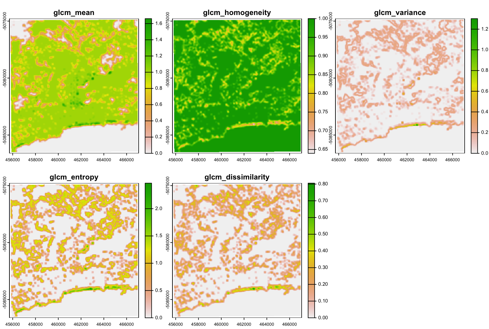
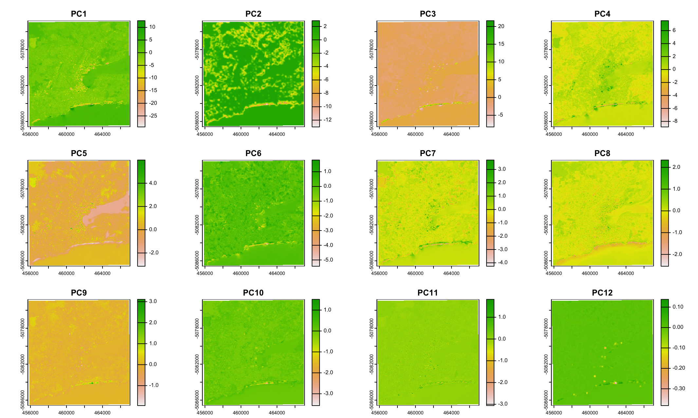

3 Corrections and Data Enhancements
3.1 Summary
This week, we start with a discussion on the history of satellite imagery. The first digital sensor put on a Landsat satellite was the Multispectral Scanner Camera (MSS) built by Virginia Norwood. Its innovative design was initially reluctantly implemented by NASA - the previous RBV sensors were limited to only a few bands. The image data captured by satellites was made publicly available in 2008.
3.1.1 Corrections
Raw satellite imagery require certain corrections before being used for analysis. Even though these days, images come to us analysis-ready in most cases, it’s good to understand what types of corrections need to be applied, and why.
Geometric correction This is a correction of perspective that needs to be applied for images taken at off-nadir angle, meaning they are made not directly towards the Earth. The correction is done by mapping the points on a pre-correction image to the same points in the ground truth image, which can be done with simple OLS regression. This correction is a similar operation to georeferencing a map without coordinates.
Atmospheric correction This correction is needed when the signal going though the atmosphere is distorted resulting in haze and scattering in the images. This shows up in images as the adjacency effect, where pixel values switch their positions. Also worth mentioning is that the radiance can be disturbed in different ways, e.g. it can scatter in the atmosphere, or the light can get absorbed by the particles in the atmosphere - atmospheric attenuation.
Orthorectification / topographic correction This is used to force pixels to be viewed at nadir angle. To correct for this, we can use a cosine correction, which requires information on the sensor geometry and an elevation model of the area imaged.
3.1.2 Radiometric Calibration
Raw pixel values of a satellite image need to be converted from digital numbers to represent reflectance. In raw images, a Digital Number (DN) pixels represent image brightness or radiance recorded, which is the intensity of the electromagnetic radiation per pixel. Thus, radiance is the amount of light recorded by the sensor, while reflectance is the ratio of signal reflected from an object, to the amount recorded by the sensor. Radiometric calibration is this process of converting DN to spectral radiance, calculated using values that the sensor was calibrated for, before deployed on satellites.
As mentioned, in practice, most of the data we use comes already analysis-ready. For Landsat, algorithms like LEDPAS or L8SR apply the relevant corrections, which are then made into e.g. Level 2 products.
3.1.3 Enhancements and data joining
Certain manipulations can be done of the corrected images. Firstly, we may need to join multiple, images that come in tiles. The edges of such tiles will usually overlap, in which case we can blend them into each other by mosaicking, or feathering.
Filters filters are essential convolution kernels (moving window). Different filters can be used to enhance, or smooth the texture of images or extract certain features. Various operations can be done with filters, e.g. calculating mean, variance, entropy etc. The resulting data will then hold the values of the operation applied to the pixels within the kernel centered on every pixel.
We can also stack images on top of each other, e.g. from different dates, which is data fusion.
Just how PCA, a dimensionality reduction method can be used on tabular data, where the number of variables is reduced, so is it the same for satellite imagery. Linear combinations of multiple bands are combined in a way that maximises the variation in pixel values thus reducing the spectral resolution.
3.2 Applications
Research utilising the methods covered this week is plentiful. As discussed, there are several types of corrections that are necessary, and many different ways to apply them. For example, one study evaluated different models of atmospheric corrections on raw Landsat data, in order to find the most appropriate ones for the coastal environment around Hong Kong (Nazeer, Nichol, and Yung 2014), and found various correction models to perform best over different land-cover classes. They also point to the fact that local characteristics of the atmosphere around Hong Kong have an impact on how the correction model performs, which matters especially when a model was created for continental landmass areas. This highlight the importance of using a correction model appropriate for the local area.
One interesting study by Chen, Stow, and Gong (2004) evaluated the classification accuracy for different window sizes and spatial resolutions of imagery. One interesting finding is that calculating texture measures and using them as input had a higher influence on improved model performance for high resolution data. The window size was more important for model accuracy for high resolution data.
Texture-based methods applied to images have largely been used to identify or classify certain features of the environment. One such example is a study by (Kit, Lüdeke, and Reckien 2012), that identified slums in Hyderabad using texture-based methods on satellite imagery. The detection relies on a line detection based on lacunarity calculation, which is a measure that uses a variance filter. The performance of this method is compared to a PCA calculation from multiple bands, and the line detection method is found to be a viable method for predicting slums in this city.
This methodology of feature engineering with filters and texture-based methods can often be used as input to machine learning models in order to train a model for classifying features. For example, (Tuia et al. 2009) have used SVMs for classifying high resolution urban images. The authors point to the fact that such methods, though, are limited as they do not consider the spatial relation between pixel values. It was shown that by including the spatial information, the model’s classification accuracy improved significantly.
3.3 Reflections
The more technically-heavy material of this week has given me a good grounding in understanding some of the aspects of satellite data that we don’t directly deal with, as data comes analysis-ready. What I find particularly interesting are the kernel-based operations that can be applied to satellite data and what features they might show. I previously had not encountered the methodology of applying kernel-based operations to images as feature extractors, which could then be used for modelling.
I had a go at applying several filters to the 4th band of the image of Dunedin from previous weeks. The images below are the outputs of applying a 7x7 window and calculating the mean, variance, entropy etc.

Some of the measures may be difficult to interpret, as this was run on the band 4 representing green - e.g. water is only distinctively shown in the mean raster, while high entropy, for example, shows up along the coastline. I then applied the PCA algorithm on the original bands of the data, which gave the principal components visible below. 
Overall, I found the material this week particularly interesting, especially learning about filters and kernel based operations, which can be performed on these data